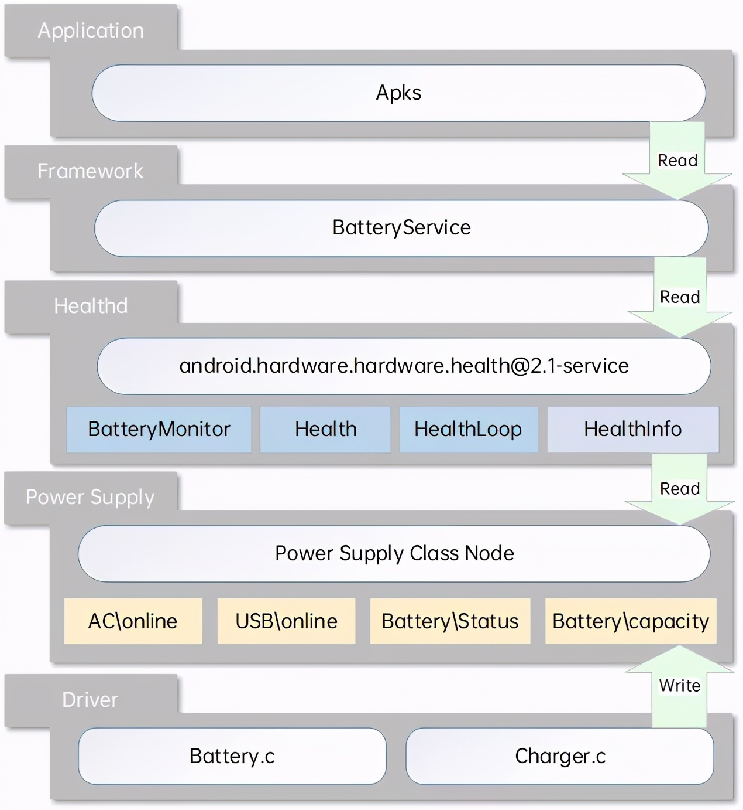
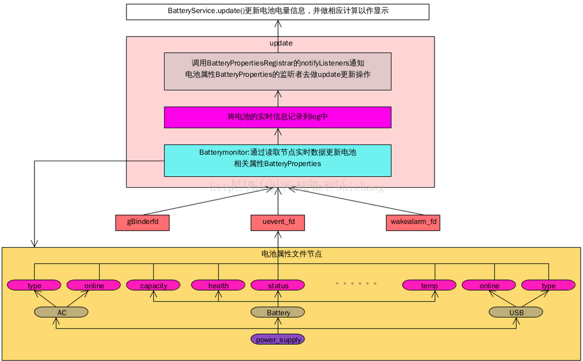
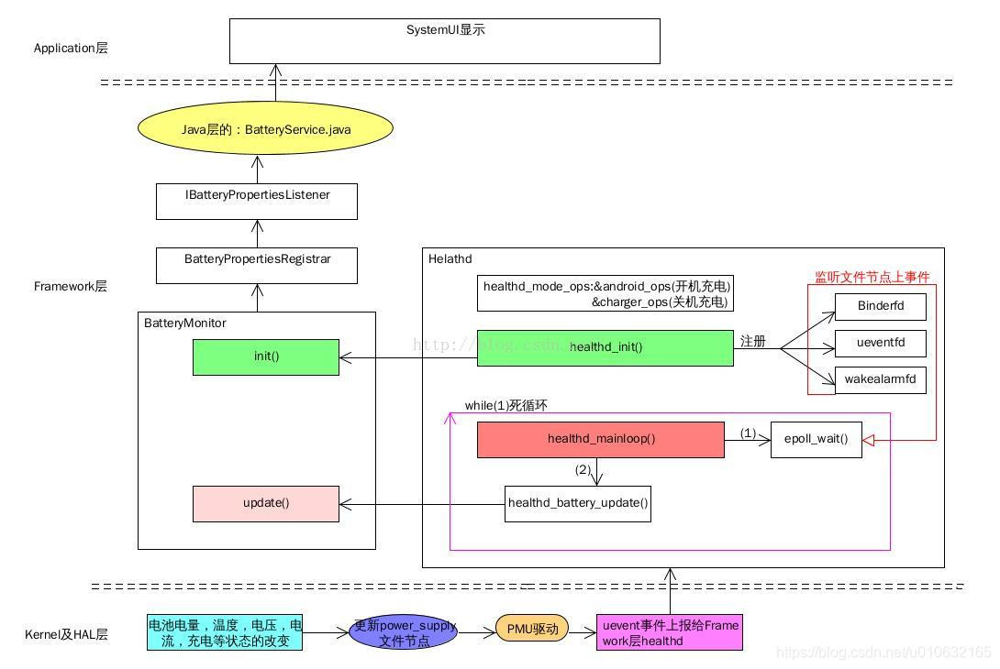
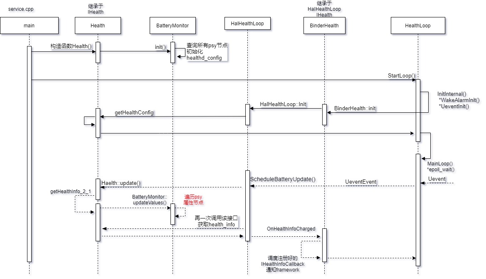
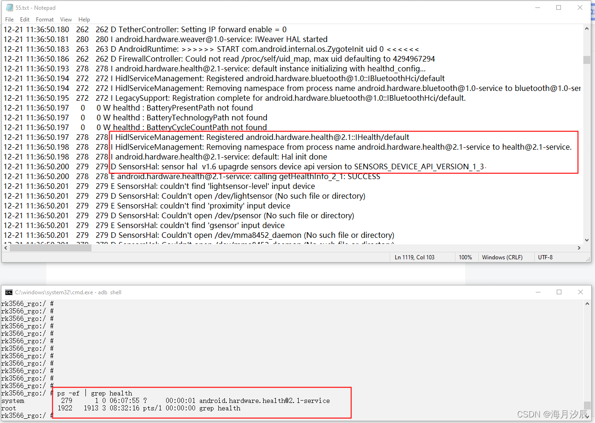

概述
高通A6650 healthd 守护进程分析。
Android 9 引入了从 health@1.0 HAL 升级的主要版本 android.hardware.health HAL 2.0。这一新 HAL 具有以下优势：
框架代码和供应商代码之间的区别更清楚。
弃用了不必要的 healthd 守护程序。
供应商对运行状况信息报告进行自定义的自由度更高。
更多设备运行状况信息（不仅包括电池信息）。
Android 11 包含 android.hardware.health HAL 2.1，这是一个从 health@2.0 HAL 升级的次要版本。这一新 HAL 具有以下优势：
更易于实现
更好地与现有 2.0 HAL API 保持一致
在关机模式充电代码中可以实现更好的 Treble 分离
更好地支持框架来指示设备的电池运行状况
在 Android 11 中，所有healthd代码都被重构为libhealthloop和libhealth2impl ，然后进行修改以实现 health@2.1 HAL。 这两个库由health@2.0-impl-2.1静态链接，health@2.0-impl-2.1 是 health 2.1 的直通实现。静态链接库使health@2.0-impl-2.1能够执行与healthd相同的工作，例如运行healthd_mainloop和轮询。在 init 中， health@2.1-service将接口IHealth的实现注册到hwservicemanager 。升级具有 Android 8.x 或 9 供应商映像和 Android 11 框架的设备时，供应商映像可能不提供 health@2.1 服务。
Android弃用health@1.0 HIDL
Framework 将继续使用health@1.0直到按标准HAL弃用计划完全弃用为止 。当health@1.0被弃用（条目从 框架兼容性矩阵除去）， healthd和libbatterymonitor必须也系统中除去，以避免未知的healthd行为。由于health@1.0是一个可选的HAL，并且所有 healthd对health@1.0的依赖都受到NULL检查的保护，因此在弃用时不应该中断。
当Android删除旧代码路径（healthd，health@1.0）时，按弃用计划Health@1.0 HAL将被弃用。此外，Android还删除了以下内容：
Framework 中的healthd依赖
healthd
系统中 health@1.0的HAL定义库
Framework 兼容性矩阵中的health@1.0条目
移除healthd 对于运行Android 9的设备和升级到Android 9且在新vendor镜像中提供Health 2.0 HAL的设备，我们建议从系统镜像中删除healthd以节省磁盘空间并加快启动时间。
使用Android 9启动的设备必须提供2.0 HAL（并且不得提供1.0 HAL）。未使用Android 9启动但计划更新供应商映像为Target Framework Compatibility Matrix Version 3（在Android 9中发布）的设备必须删除现有的1.0 HAL实现并提供2.0 HAL。
AOSP包含多个帮助库，旨在帮助您实现2.0 HAL和从旧的1.0 HAL过渡。
术语
health@1.0：android.hardware.health@1.0 的缩写。指的是 Android 8.0 中发布的运行状况 HIDL 的 1.0 版 HAL。
health@2.0：android.hardware.health@2.0 的缩写。指的是 Android 9 中发布的运行状况 HIDL 的 2.0 版 HAL。
health@2.1：android.hardware.health@2.1 的缩写。指的是 Android 11 中发布的运行状况 HIDL 的 2.1 版 HAL。
charger：在关机模式充电过程中运行的可执行文件，用于显示手机充电动画。
recovery：在恢复模式下运行的可执行文件，必须检索电池信息。
healthd：在 Android 中运行的旧版守护进程，用于检索与运行状况相关的信息并将其提供给框架。
storaged：在 Android 中运行的守护进程，用于检索存储信息并将其提供给框架。
参考
软件架构
 
可以看到文件比较多，主要是通过BatteryMonitor.cpp中的BatteryMonitor::update(void)函数上报信息，其中，内核首先会更新数据到/sys/class/power_supply/battery节点下各个属性，这个在上一个小节有做解释，先来看一下整体的架构，后面再来深入到代码中去分析；具体图片（该图片来自互联网，因为被转载较多，已经不知道出处），具体的流程整理的很清楚，如下所示；

这幅图片再一次把整体的数据走向具体化，可以看到主要负责工作的是BatteryMonitor，主要分析一下该文件中的init和update就可以搞清楚大部分的问题。
涉及文件
编译文件
./vendor/lib64/hw/android.hardware.health@2.0-impl-2.1-qti.so
./vendor/lib64/libsystem_health_mon.so
./vendor/etc/vintf/manifest/android.hardware.health@2.1.xml
./vendor/etc/init/android.hardware.health@2.1-service.rc
./vendor/bin/hw/android.hardware.health@2.1-service
healthd涉及文件：
system/core/healthd：
.
├── Android.bp
├── android.hardware.health@2.0-service.rc
├── Android.mk
├── animation.h
├── AnimationParser.cpp
├── AnimationParser.h
├── api
│ ├── charger_sysprop-current.txt
│ └── charger_sysprop-latest.txt
├── BatteryMonitor.cpp
├── charger.cpp
├── charger.sysprop
├── charger_test.cpp
├── charger_utils.cpp
├── charger_utils.h
├── healthd_draw.cpp
├── healthd_draw.h
├── healthd_mode_charger.cpp
├── healthd_mode_charger.h
├── healthd_mode_charger_nops.cpp
├── healthd_mode_charger_nops.h
├── healthd.rc
├── HealthServiceDefault.cpp
├── HealthServiceHealthd.cpp
├── images
│ ├── battery_fail.png
│ └── battery_scale.png
├── include
│ └── healthd
│ ├── BatteryMonitor.h
│ └── healthd.h
├── manifest_healthd.xml
├── OWNERS
└── tests
├── Android.mk
└── AnimationParser_test.cpp
HIDL涉及文件：
hardware/interfaces/health：
├── 2.1
│ ├── Android.bp
│ ├── default
│ │ ├── Android.bp
│ │ ├── android.hardware.health@2.1-service.rc
│ │ ├── android.hardware.health@2.1.xml
│ │ ├── impl.cpp
│ │ └── service.cpp
│ ├── IHealth.hal
│ ├── IHealthInfoCallback.hal
│ ├── README.md
│ ├── types.hal
│ └── vts
│ ├── functional
│ │ ├── Android.bp
│ │ └── VtsHalHealthV2_1TargetTest.cpp
│ └── OWNERS
├── storage
│ └── 1.0
│ ├── Android.bp
│ ├── default
│ │ ├── Android.bp
│ │ ├── android.hardware.health.storage@1.0-service.rc
│ │ ├── manifest_android.hardware.health.storage@1.0.xml
│ │ ├── service.cpp
│ │ ├── Storage.cpp
│ │ └── Storage.h
│ ├── IGarbageCollectCallback.hal
│ ├── IStorage.hal
│ ├── types.hal
│ └── vts
│ └── functional
│ ├── Android.bp
│ ├── VtsHalHealthStorageV1_0TargetTest.config
│ └── VtsHalHealthStorageV1_0TargetTest.cpp
└── utils
├── libhealth2impl
│ ├── Android.bp
│ ├── BinderHealth.cpp
│ ├── HalHealthLoop.cpp
│ ├── Health.cpp
│ └── include
│ └── health2impl
│ ├── BinderHealth.h
│ ├── Callback.h
│ ├── HalHealthLoop.h
│ └── Health.h
└── libhealthloop
├── Android.bp
├── HealthLoop.cpp
├── include
│ └── health
│ ├── HealthLoop.h
│ └── utils.h
└── utils.cpp
system/core/healthd/Android.bphealth编译了一个可执行文件charger，该程序用于关机充电模式：
cc_binary {
name: "charger",
defaults: ["charger_defaults"],
recovery_available: true,
srcs: [
"charger.cpp",
"charger_utils.cpp",
],
target: {
recovery: {
// No UI and libsuspend for recovery charger.
cflags: [
"-DCHARGER_FORCE_NO_UI=1",
],
exclude_shared_libs: [
"libpng",
],
exclude_static_libs: [
"libhealthd_draw",
"libhealthd_charger",
"libminui",
"libsuspend",
],
}
}
}
软件流程
由于uevent机制仅将一个简单的字符串传递给了用户空间，而安卓系统建立在kernel之上，需要思考如何将设备属性的变化值及时更新到用户空间，于是就有了healthd服务，healthd目前已经更新到了2.1版本，其主要工作通过epoll_wait来监听kernel中的uevent事件。具体的函数调用流程图如下：

从service.cpp开始理一下调用流程，可以整理出上述的调用流程，构造函数为初始化流程，
Uevent那条虚线为当psy-uevent上报后触发epoll之后的调用流程。与底层节点交互的逻辑都在BatteryMonitor中，在初始化过程中会初始化healthd_config结构体，用于保存psy属性节点的路径。
在监听循环MainLoop函数中，一个while(1)循环，调用epoll_wait()函数来监听uevent，收到事件之后会调用初始化时注册好的func（UeventEvent），该函数会通过uevent_kernel_multicast_recv接口去读取netlink发送的sk_buff->data，通过查找其中的字符串来判断事件是否为psy子系统发送的，如果不是的话，不会进行处理。进一步的处理流程主要是调用到BatteryMonitor中的updateValues，在该函数中会遍历读取psy属性节点，存储在HealthInfo结构体中，之后通过BinderHealth中注册好的回调函数IHealthInfoCallback通知BatterySerice，具体的通知函数为BinderHealth：OnHealthInfoChanged。
Healthd是一个根植于powersupply子系统，并采用了epoll监听底层节点的uevent事件，之后轮询底层属性节点的守护进程。在安卓R版本中，Healthd相关代码重构为libhealthloop和libhealth2impl，但为了保证向后兼容，可以看到在ScheduleBatteryUpdate()函数中调用了两次updateValues，这样会遍历两次底层节点造成了冗余。另外在psy-uevent机制中，也有一次属性节点的遍历，一共三次遍历，这就要求底层驱动在更新属性值时，不能加入耗时的IO操作，否则会影响系统性能。
HIDL服务注册
hardware/interfaces/health/2.0/README我们可以从以下得知2.0下是改为实施 2.1 HAL:
# Implement the 2.1 HAL instead!
It is strongly recommended that you implement the 2.1 HAL directly. See
`hardware/interfaces/health/2.1/README.md` for more details.
强烈建议您直接实现 2.1 HAL。 看`hardware/interfaces/health/2.1/README.md`了解更多详情。
查看package情况：
device/qcom/vendor-common/base.mk
1103:PRODUCT_PACKAGES += android.hardware.health@2.1-impl-qti
1104:PRODUCT_PACKAGES += android.hardware.health@2.1-service
\hardware\interfaces\health\2.1\default\service.cpp通过new BinderHealth创建HIDL binder服务:
using IHealth_2_0 = ::android::hardware::health::V2_0::IHealth;
static constexpr const char* gInstanceName = "default";
int main(int /* argc */, char* /* argv */[]) {
sp<IHealth> passthrough =
IHealth::castFrom(IHealth_2_0::getService(gInstanceName, true /* getStub */));
CHECK(passthrough != nullptr)
<< "Cannot find passthrough implementation of health 2.1 HAL for instance "
<< gInstanceName;
sp<BinderHealth> binder = new BinderHealth(gInstanceName, passthrough);
return binder->StartLoop();
}
BinderHealth实际上是继承HalHealthLoop类，HalHealthLoop继承HealthLoop，所以binder->StartLoop调用的是HealthLoop.cpp里面的StartLoop()函数：
//health/utils/libhealth2impl/BinderHealth.cpp:
BinderHealth::BinderHealth(const std::string& name, const sp<IHealth>& impl)
: HalHealthLoop(name, impl) { //继承
CHECK_NE(this, impl.get());
CHECK(!impl->isRemote());
}
//health/utils/libhealth2impl/include/health2impl/HalHealthLoop.h:
// An implementation of HealthLoop for using a given health HAL. This is useful
// for services that opens the passthrough implementation and starts the HealthLoop
// to periodically poll data from the implementation.
class HalHealthLoop : public HealthLoop { //继承
CHECK_NE(this, impl.get());
public:
HalHealthLoop(const std::string& name, const sp<IHealth>& service)
: instance_name_(name), service_(service) {}
}
绑定模式的服务通过
registerAsService接口实现，代码流程:
hardware\interfaces\health\2.1\default\service.cpp
StartLoop()
hardware\interfaces\health\utils\libhealthloop\HealthLoop.cpp
StartLoop() >InitInternal() > Init(&healthd_config_)
hardware\interfaces\health\utils\libhealth2impl\BinderHealth.cpp
Init(struct healthd_config* config) > CHECK_EQ(registerAsService(instance_name()), android::OK)
到这里从log上看就打开一个android.hardware.health@2.1-service服务了。

ps -A | grep health:
A6650:/ # ps -A | grep health
system 646 1 12978784 3608 do_epoll_wait 0 S android.hardware.health@2.1-service
Init获取所有psy属性节点的路径
Main函数中，我们看到第一行是sp<IHealth> passthrough，创建了一个Ihealth类，那必然会跑它的构造函数，跟踪发现Health继承Ihealth类，编译器会默认先调用父类的构造函数，再调用子类的构造函数，如下：utils/libhealth2impl/include/health2impl/Health.h:
class Health : public IHealth {
43 public:
//utils/libhealth2impl/Health.cpp:
Health::Health(std::unique_ptr<healthd_config>&& config) : healthd_config_(std::move(config)) {
battery_monitor_.init(healthd_config_.get());
}
BatteryMonitor::init函数主要是先读取psy节点的type类型，ANDROID_POWER_SUPPLY_TYPE_USB和ANDROID_POWER_SUPPLY_TYPE_AC充电器类型只需要保存online值，而ANDROID_POWER_SUPPLY_TYPE_BATTERY电池类型保存的比较多，下面有个表：
sys节点 |
名词解释 |
|---|---|
/sys/class/power_supply/ac/online |
AC 电源连接状态 |
/sys/class/power_supply/usb/online |
USB电源连接状态 |
/sys/class/power_supply/*/capacity_level （在健康 2.1 中添加） |
容量等级 |
/sys/class/power_supply/*/capacity |
电池电量百分比 |
/sys/class/power_supply/*/charge_counter |
剩余容量 uAh |
/sys/class/power_supply/*/charge_full |
最大容量 |
/sys/class/power_supply/*/charge_full_design （在健康 2.1 中添加） |
最大容量 |
/sys/class/power_supply/*/current_avg |
平均电流 |
/sys/class/power_supply/*/current_max |
最大电流 |
/sys/class/power_supply/*/current_now |
当前电流 |
/sys/class/power_supply/*/cycle_count |
循环次数 |
/sys/class/power_supply/*/health |
电池状态 |
/sys/class/power_supply/*/present |
在位状态 |
/sys/class/power_supply/*/status |
充电状态 |
/sys/class/power_supply/*/technology |
电池技术 |
/sys/class/power_supply/*/temp |
电池温度 |
/sys/class/power_supply/*/time_to_full_now （在健康 2.1 中添加） |
充电到100%需要的时间 |
/sys/class/power_supply/*/voltage_max |
最大电压 |
/sys/class/power_supply/*/voltage_now |
目前电压 |
void BatteryMonitor::init(struct healthd_config *hc) {
String8 path;
char pval[PROPERTY_VALUE_MAX];
mHealthdConfig = hc;
std::unique_ptr<DIR, decltype(&closedir)> dir(opendir(POWER_SUPPLY_SYSFS_PATH), closedir);
if (dir == NULL) {
KLOG_ERROR(LOG_TAG, "Could not open %s\n", POWER_SUPPLY_SYSFS_PATH);
} else {
struct dirent* entry;
while ((entry = readdir(dir.get()))) {
const char* name = entry->d_name;
if (!strcmp(name, ".") || !strcmp(name, ".."))
continue;
std::vector<String8>::iterator itIgnoreName =
find(hc->ignorePowerSupplyNames.begin(), hc->ignorePowerSupplyNames.end(),
String8(name));
if (itIgnoreName != hc->ignorePowerSupplyNames.end())
continue;
// Look for "type" file in each subdirectory
path.clear();
path.appendFormat("%s/%s/type", POWER_SUPPLY_SYSFS_PATH, name);
switch(readPowerSupplyType(path)) {
case ANDROID_POWER_SUPPLY_TYPE_AC:
case ANDROID_POWER_SUPPLY_TYPE_USB:
case ANDROID_POWER_SUPPLY_TYPE_WIRELESS:
case ANDROID_POWER_SUPPLY_TYPE_DOCK:
path.clear();
path.appendFormat("%s/%s/online", POWER_SUPPLY_SYSFS_PATH, name);
if (access(path.string(), R_OK) == 0)
mChargerNames.add(String8(name));
break;
case ANDROID_POWER_SUPPLY_TYPE_BATTERY:
// Some devices expose the battery status of sub-component like
// stylus. Such a device-scoped battery info needs to be skipped
// in BatteryMonitor, which is intended to report the status of
// the battery supplying the power to the whole system.
if (isScopedPowerSupply(name)) continue;
mBatteryDevicePresent = true;
if (mHealthdConfig->batteryStatusPath.isEmpty()) {
path.clear();
path.appendFormat("%s/%s/status", POWER_SUPPLY_SYSFS_PATH,
name);
if (access(path, R_OK) == 0)
mHealthdConfig->batteryStatusPath = path;
}
if (mHealthdConfig->batteryHealthPath.isEmpty()) {
path.clear();
path.appendFormat("%s/%s/health", POWER_SUPPLY_SYSFS_PATH,
name);
if (access(path, R_OK) == 0)
mHealthdConfig->batteryHealthPath = path;
}
if (mHealthdConfig->batteryPresentPath.isEmpty()) {
path.clear();
path.appendFormat("%s/%s/present", POWER_SUPPLY_SYSFS_PATH,
name);
if (access(path, R_OK) == 0)
mHealthdConfig->batteryPresentPath = path;
}
if (mHealthdConfig->batteryCapacityPath.isEmpty()) {
path.clear();
path.appendFormat("%s/%s/capacity", POWER_SUPPLY_SYSFS_PATH,
name);
if (access(path, R_OK) == 0)
mHealthdConfig->batteryCapacityPath = path;
}
if (mHealthdConfig->batteryVoltagePath.isEmpty()) {
path.clear();
path.appendFormat("%s/%s/voltage_now",
POWER_SUPPLY_SYSFS_PATH, name);
if (access(path, R_OK) == 0) {
mHealthdConfig->batteryVoltagePath = path;
}
}
if (mHealthdConfig->batteryFullChargePath.isEmpty()) {
path.clear();
path.appendFormat("%s/%s/charge_full",
POWER_SUPPLY_SYSFS_PATH, name);
if (access(path, R_OK) == 0)
mHealthdConfig->batteryFullChargePath = path;
}
if (mHealthdConfig->batteryCurrentNowPath.isEmpty()) {
path.clear();
path.appendFormat("%s/%s/current_now",
POWER_SUPPLY_SYSFS_PATH, name);
if (access(path, R_OK) == 0)
mHealthdConfig->batteryCurrentNowPath = path;
}
if (mHealthdConfig->batteryCycleCountPath.isEmpty()) {
path.clear();
path.appendFormat("%s/%s/cycle_count",
POWER_SUPPLY_SYSFS_PATH, name);
if (access(path, R_OK) == 0)
mHealthdConfig->batteryCycleCountPath = path;
}
if (mHealthdConfig->batteryCapacityLevelPath.isEmpty()) {
path.clear();
path.appendFormat("%s/%s/capacity_level", POWER_SUPPLY_SYSFS_PATH, name);
if (access(path, R_OK) == 0) mHealthdConfig->batteryCapacityLevelPath = path;
}
if (mHealthdConfig->batteryChargeTimeToFullNowPath.isEmpty()) {
path.clear();
path.appendFormat("%s/%s/time_to_full_now", POWER_SUPPLY_SYSFS_PATH, name);
if (access(path, R_OK) == 0)
mHealthdConfig->batteryChargeTimeToFullNowPath = path;
}
if (mHealthdConfig->batteryFullChargeDesignCapacityUahPath.isEmpty()) {
path.clear();
path.appendFormat("%s/%s/charge_full_design", POWER_SUPPLY_SYSFS_PATH, name);
if (access(path, R_OK) == 0)
mHealthdConfig->batteryFullChargeDesignCapacityUahPath = path;
}
if (mHealthdConfig->batteryCurrentAvgPath.isEmpty()) {
path.clear();
path.appendFormat("%s/%s/current_avg",
POWER_SUPPLY_SYSFS_PATH, name);
if (access(path, R_OK) == 0)
mHealthdConfig->batteryCurrentAvgPath = path;
}
if (mHealthdConfig->batteryChargeCounterPath.isEmpty()) {
path.clear();
path.appendFormat("%s/%s/charge_counter",
POWER_SUPPLY_SYSFS_PATH, name);
if (access(path, R_OK) == 0)
mHealthdConfig->batteryChargeCounterPath = path;
}
if (mHealthdConfig->batteryTemperaturePath.isEmpty()) {
path.clear();
path.appendFormat("%s/%s/temp", POWER_SUPPLY_SYSFS_PATH,
name);
if (access(path, R_OK) == 0) {
mHealthdConfig->batteryTemperaturePath = path;
}
}
if (mHealthdConfig->batteryTechnologyPath.isEmpty()) {
path.clear();
path.appendFormat("%s/%s/technology",
POWER_SUPPLY_SYSFS_PATH, name);
if (access(path, R_OK) == 0)
mHealthdConfig->batteryTechnologyPath = path;
}
break;
case ANDROID_POWER_SUPPLY_TYPE_UNKNOWN:
break;
}
// Look for "is_dock" file
path.clear();
path.appendFormat("%s/%s/is_dock", POWER_SUPPLY_SYSFS_PATH, name);
if (access(path.string(), R_OK) == 0) {
path.clear();
path.appendFormat("%s/%s/online", POWER_SUPPLY_SYSFS_PATH, name);
if (access(path.string(), R_OK) == 0)
mChargerNames.add(String8(name));
}
}
}
// Typically the case for devices which do not have a battery and
// and are always plugged into AC mains.
if (!mBatteryDevicePresent) {
KLOG_WARNING(LOG_TAG, "No battery devices found\n");
hc->periodic_chores_interval_fast = -1;
hc->periodic_chores_interval_slow = -1;
} else {
if (mHealthdConfig->batteryStatusPath.isEmpty())
KLOG_WARNING(LOG_TAG, "BatteryStatusPath not found\n");
if (mHealthdConfig->batteryHealthPath.isEmpty())
KLOG_WARNING(LOG_TAG, "BatteryHealthPath not found\n");
if (mHealthdConfig->batteryPresentPath.isEmpty())
KLOG_WARNING(LOG_TAG, "BatteryPresentPath not found\n");
if (mHealthdConfig->batteryCapacityPath.isEmpty())
KLOG_WARNING(LOG_TAG, "BatteryCapacityPath not found\n");
if (mHealthdConfig->batteryVoltagePath.isEmpty())
KLOG_WARNING(LOG_TAG, "BatteryVoltagePath not found\n");
if (mHealthdConfig->batteryTemperaturePath.isEmpty())
KLOG_WARNING(LOG_TAG, "BatteryTemperaturePath not found\n");
if (mHealthdConfig->batteryTechnologyPath.isEmpty())
KLOG_WARNING(LOG_TAG, "BatteryTechnologyPath not found\n");
if (mHealthdConfig->batteryCurrentNowPath.isEmpty())
KLOG_WARNING(LOG_TAG, "BatteryCurrentNowPath not found\n");
if (mHealthdConfig->batteryFullChargePath.isEmpty())
KLOG_WARNING(LOG_TAG, "BatteryFullChargePath not found\n");
if (mHealthdConfig->batteryCycleCountPath.isEmpty())
KLOG_WARNING(LOG_TAG, "BatteryCycleCountPath not found\n");
if (mHealthdConfig->batteryCapacityLevelPath.isEmpty())
KLOG_WARNING(LOG_TAG, "batteryCapacityLevelPath not found\n");
if (mHealthdConfig->batteryChargeTimeToFullNowPath.isEmpty())
KLOG_WARNING(LOG_TAG, "batteryChargeTimeToFullNowPath. not found\n");
if (mHealthdConfig->batteryFullChargeDesignCapacityUahPath.isEmpty())
KLOG_WARNING(LOG_TAG, "batteryFullChargeDesignCapacityUahPath. not found\n");
}
if (property_get("ro.boot.fake_battery", pval, NULL) > 0
&& strtol(pval, NULL, 10) != 0) {
mBatteryFixedCapacity = FAKE_BATTERY_CAPACITY;
mBatteryFixedTemperature = FAKE_BATTERY_TEMPERATURE;
}
}
上报流程
跟踪得到上面的大概流程如下，最后的打印在BatteryMonitor.cpp里面的logValues。
hardware\interfaces\health\2.1\default\service.cpp
binder->StartLoop();
hardware\interfaces\health\utils\libhealthloop\HealthLoop.cpp
StartLoop()->MainLoop-> PeriodicChores -> ScheduleBatteryUpdate(); ->
hardware\interfaces\health\utils\libhealth2impl\HalHealthLoop.cpp
ScheduleBatteryUpdate() _>update();
ScheduleBatteryUpdate() _> OnHealthInfoChanged(health_info); //通知BatterySevices
\hardware\interfaces\health\utils\libhealth2impl\Health.cpp
update() >logValues()
update() > getHealthInfo_2_1([&](auto res, const auto& health_info) > battery_monitor_.updateValues();
\system\core\healthd\BatteryMonitor.cpp
logValues
updateValues
Healthd 2.1要求
健康 2.0 HAL 对 HAL 接口提出了一组要求，但相应的 VTS 测试在执行方面相对宽松。在 Android 11 中，添加了新的 VTS 测试以对搭载 Android 11 及更高版本的设备强制执行以下要求：
无电流和平均电池电流的单位必须是微安 (μA)。
瞬时和平均电池电流的符号必须正确。具体来说：
current == 0 当电池状态为UNKNOWN时
当电池状态为CHARGING时，电流 > 0
当电池状态为NOT_CHARGING时，电流 <= 0
当电池状态为DISCHARGING时，电流 < 0
电池状态为FULL时不强制执行
电池状态必须与是否连接电源正确。具体来说：
当且仅当连接了电源时，电池状态必须是CHARGING 、 NOT_CHARGING或FULL之一；
当且仅当电源断开时，电池状态必须为DISCHARGING 。
如果您在实现中使用libbatterymonitor并传递来自内核接口的值，请确保 sysfs 节点报告正确的值：
确保使用正确的符号和单位报告电池电流。这包括以下 sysfs 节点：
/sys/class/power_supply/*/current_avg
/sys/class/power_supply/*/current_max
/sys/class/power_supply/*/current_now
正值表示进入电池的电流。
值应以微安 (μA) 为单位。
确保以微伏 (μV) 为单位报告电池电压。这包括以下 sysfs 节点：
/sys/class/power_supply/*/voltage_max
/sys/class/power_supply/*/voltage_now
请注意，默认 HAL 实现将voltage_now除以 1000 并以毫伏 (mV) 为单位报告值。